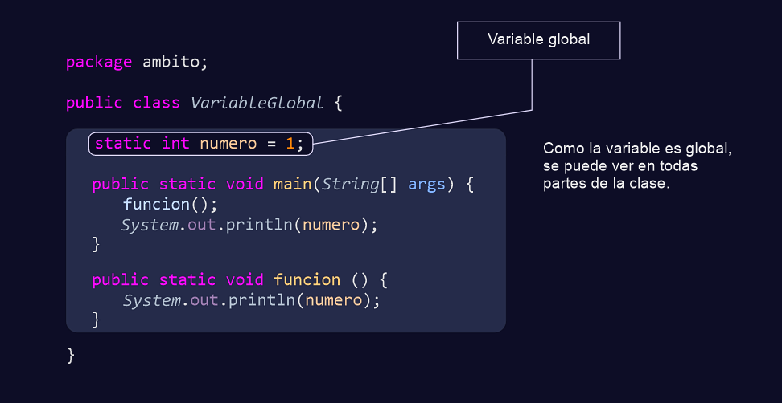
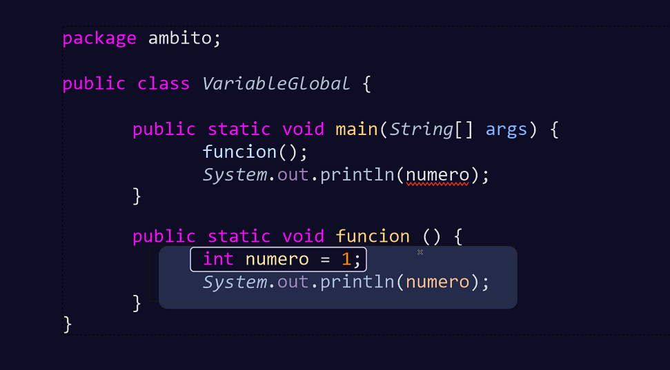
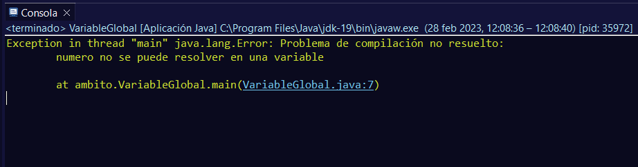
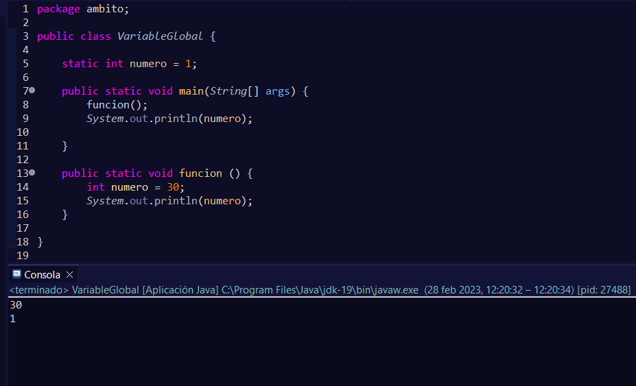
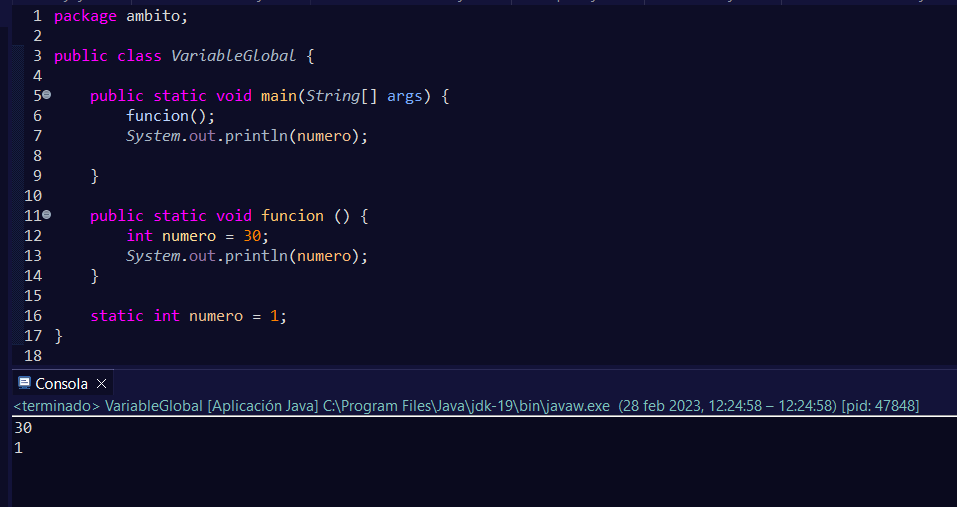
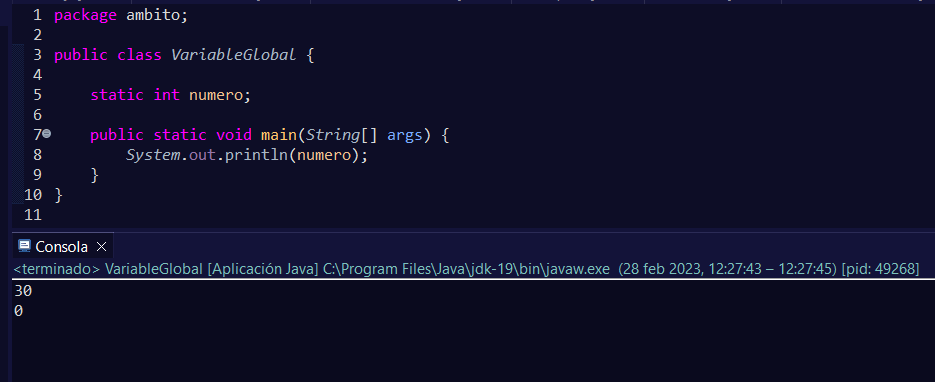

Cuando declaramos una variable global, se hace desde fuera de cualquier método.
Por eso, cuando imprimimos la variable, conseguimos ver ese valor.
Por otro lado, las variables locales son las que se declaran dentro del método y éstas no son visibles fuera de éste.
Aquí se puede comprobar el error cuando queremos imprimir el valor de la variable, ya que solo es visible desde dentro del método donde se declaró y no es accesible desde otro lugar.
Por eso, si intentamos ejecutar el programa, nos mostrará una excepción:
En este otro ejemplo, podemos ver que aunque dos variable se declaren con el mismo nombre, si una de ellas es de ámbito global y la otra es de ámbito local, serán interpretadas como dos variables distintas y sus valores no se alterarán entre ellas.
En el ejemplo se puede ver cómo lo primero que se ejecuta es la función y dentro de ésta se declara una variable con el mismo nombre que la global. En la siguiente línea imprime el valor de la variable y sale de la función.
A continuación, se imprime el valor de la variable numero desde el main, pero ya no es la variable local que había en el método, si no la variable global que se encuentra fuera de los métodos.
La variable global se podría haber colocado en otro lugar como al final de los métodos, y no por ello el resultado varía.
Esto es debido a que se cargan en memoria los valores iniciales de las variables antes de ejecutar cualquier método. Y es por eso que, si ahora mismo no le asignamos un valor a una variable global, Java le asigne un valor por defecto.
También tengo que recalcar que no todas las variables llevarán el modificador static cuando sean globales, pero eso ya se verá en próximos apartados.